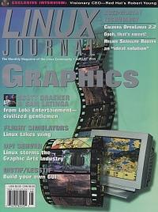

Shutdown Archive web server
Search:
Linux Journal
Issue #64/August 1999

Focus
Graphics
by Marjorie Richardson
Features
Scott Draeker and Sam Latinga, Loki Entertainment
by Michael J. Hammel
A talk with the company who brings you the computer game Civilization: Call To Power.
Motif/Lesstif Application Development
by Glen Wiley
A tutorial designed to help you build your own GUI.
Linux as an OPI Server in the Graphic Arts Industry
by Jeff Wall
A printing company finds Linux servers speed up their pre-press work.
Flight Simulators
by Roman Melnyk
A look at Linux in the Aerospace Training Industry.
Forum
Linux Expo 1999
by Marjorie Richardson
Linux Journal
attends Linux Expo.
Robert Young of Red Hat Software
by Marjorie Richardson
Market Making for the Bazaar
by Bernie Thompson
Hans L. Knobloch of IGEL
by Marjorie Richardson
A talk with the head of the company that invented the thin client.
AbiWord: AbiSource's Open Source Word Processor
by Craig Knudsen
A cross-platform commercial application is giving away their source—here's the story.
Dynamic Load Balancing DNS: dlbDNS
by Harish V.C. and Brad Owens
This article discusses an attempt to solve the problem of network traffic congestion by adding a dynamic load balancing feature to the existing DNS.
Columns
At the Forge
Advanced “New” Labels
by Reuven M. Lerner
Focus on Software
by David A. Bandel
Linux Apprentice
Graphical Toolkits for Linux Programs
by Patrick Lambert
Graphical Toolkits for Linux Programs A brief look at several popular toolkits available for Linux.
Reviews
Caldera 2.2 Review
by Jason Kroll
Helius Satellite Router
by Phil Hughes
Programming Web Graphics with Perl and GNU Software
by Michael J. Hammel
The Artists' Guide to the Gimp
by Syd Logan
Departments
Letters
More Letters to the Editor
upFRONT
New Products
Best of Technical Support
Strictly On-line
Extending the Bash Prompt
by Giles Orr
Terminal and xterm prompts can be created incorporating standard escape sequences to give user name, current working directory, time and more.
A High Availability Clustering Solution
by Phil Lewis
Mr. Lewis tells us how he designed and implemented a simple high-availability solution for his company.
Introduction to Sybase, Part 3
by Jay Sissom
Plug and Play Hardware under Linux
by David Cantrell
Open Source Remote Sensing Effort
by Dr. Shawana P. Johnson
Remote sensing software is being developed using the Open Source model by the web project at remotesensing.org.
Linux: The Complete Reference, Second Edition
by Ben Crowder
Archive Index
Shutdown Archive web server
Search:
Copyright © 1994 - 2018
Linux Journal
. All rights reserved.